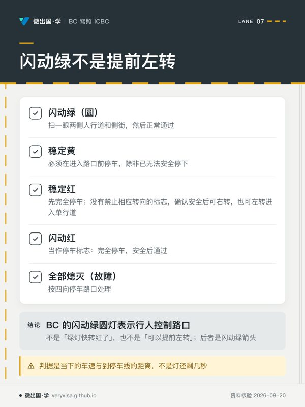

ICBC 自己说过：知识测试里差不多每五题就有一题问标志。 50 题的卷子只允许错 10 题，标志这一块不熟，容错就被吃掉了大半。
好消息是这一块最不需要死记——它是一套有内在规律的编码系统。把规律吃透，没见过的标志也判得出来；只背图案，见到变体就懵。
一、原理与设计逻辑：形状定类别，颜色定语气
为什么形状承载最重要的信息
标志系统要在最恶劣的条件下工作：雪糊住了牌面、强烈逆光、夜间远距离、驾驶者的英文不够好。在这些情况下最先能辨认的是轮廓，其次是颜色，最后才是文字。
所以设计者把最要命的指令绑定到独一无二的形状上：
- 八角形 → 只有一个含义：停。 整套体系里没有第二种标志用八角形。
- 倒等边三角形 → 只有一个含义：让行。
- 荧光黄绿五角形 → 只有一个含义：学校区。
这三个形状的专属性是有意为之。哪怕牌面完全被雪盖住，只剩一个八角形的轮廓，指令依然成立。

上图：八种基本形状与它们各自的类别。八角形＝停；倒三角＝让行；黄底菱形＝一般警告；橙底菱形＝施工区警告；竖长方形黑白＝管制规则；红圈加红斜杠＝禁止；荧光黄绿五角形＝学校区；横长方形绿底＝指路信息。
颜色管的是「语气」和「时效」
| 颜色 | 含义 | 有没有法律义务 |
|---|---|---|
| 红 | 停止、禁止 | 有 |
| 白底黑字 | 管制规则（限速、单行、禁停） | 有 |
| 黄 | 一般警告：道路本身长期存在的状况 | 本身没有，但会使「按条件安全驾驶」的义务变严 |
| 橙 | 施工区：临时的、可能天天变 | 区内限速有，且罚款加倍 |
| 荧光黄绿 | 学校、行人、自行车相关的警告 | 同黄色 |
| 绿 | 指路：方向与距离 | 没有 |
| 蓝 | 服务设施：医院、加油、住宿 | 没有 |
一个实用推论：看到绿底或蓝底，可以先放松——它们不会要求你做任何事。看到白底竖牌或任何红色，则必须读懂，因为违反它们可以直接开罚单并计分。
圆形这一族：斜杠是开关
- 红圈 + 红斜杠 → 禁止做圈里画的那件事。
- 绿圈 → 允许做圈里画的那件事。
- 红圈但没有斜杠 → 不是禁止，是限定。例如红圈里一个左转箭头配上时段，意思是「此时段只准左转」。
判读顺序固定：先看有没有斜杠，再看圈里画的是什么。
二、2026 现行实务
学校区 vs 游乐场区：全卷最经典的对调陷阱
这两个都是 30 km/h，都需要有牌，但生效时段完全不同，而且出题人几乎必定把它们对调来做干扰项。

| 学校区 School Zone | 游乐场区 Playground Zone | |
|---|---|---|
| 限速 | 30 km/h | 30 km/h |
| 哪些天 | 仅上课日 | 每天 |
| 什么时段 | 上午 8 点至下午 5 点，或牌上附注的延长时段 | 黎明到黄昏 |
| 法源 | Motor Vehicle Act s.147(1) | Motor Vehicle Act s.147(2) |
记法：学校区看日历＋看钟；游乐场区看天光。
这个差别不是随意定的：学校的人流跟着课表走，课表之外校园是空的；而游乐场在周末和暑假人反而更多，跟着日照走才对得上真实风险。
牌子底下那块小附牌（tab）才是权威。 若附牌写明了时段，照它；若只写了速度没写时段，则适用默认的「上课日 8:00–17:00」。所以看到学校区牌不要只读数字，要往下扫一眼。
还有一种变体牌写的是「有儿童在路上或路肩时才减速」——那是条件性的，与前两种又不同。三种情形要分开。
BC 特有：闪动的绿色圆灯
这是整份卷子里最值钱的一个 BC 特有知识点，也是外省与外国来的司机最容易栽的地方。
在 BC，闪动的绿色圆灯表示：这是一个行人控制的路口。
- 主路平时一直是绿灯；
- 行人按下按钮后，它才转黄、再转红；
- 侧向街道面对的是停车标志，那里的车可能正等着插进来。
它不是「绿灯快转红了」，也不是「可以提前左转」——后者是闪动绿箭头的含义，安大略等省份用闪动绿圆灯表达这个意思，BC 不是。
正确反应不是刹车，而是扫一眼两侧人行道有没有人准备按钮、侧街有没有车在等，然后正常通过。
信号灯完整对照
| 灯态 | 含义 |
|---|---|
| 稳定红 | 先完全停车；没有禁止相应转向的标志，并向车辆、骑车人及行人让行、确认安全后，可右转；符合这些条件时也可左转进入单行道 |
| 稳定黄 | 必须在进入路口前停车，除非已无法安全停下 |
| 闪动黄 | 减速，小心通过 |
| 稳定绿 | 路口通畅时才通过——绿灯是许可，不是路权 |
| 闪动绿（圆） | 行人控制路口，侧街面对停车标志 |
| 闪动红 | 当作停车标志：完全停车，安全后通过 |
| 绿箭头 | 可沿箭头方向转 |
| 闪动绿箭头 + 稳定红 | 允许左转，直行车须等红灯 |
| 黄箭头 | 提前左转即将结束，减速停车，除非无法安全停下 |
| 全部熄灭（故障） | 按四向停车路口处理 |
黄灯那句条件句不能丢：「必须停车——除非停不下来」。判据是当下的车速与到停车线的距离，不是灯还剩几秒。删掉这个条件，规则就从安全变成了危险：黄灯亮起时若已太近，急刹制造的是追尾。
铁路道口
铁路道口红灯闪动时须完全停车并保持等待，不能因暂时看不到或听不到火车就自行通过。正常通行应等红灯停止闪动、栏杆完全升起，再观察所有轨道、确认没有第二列火车且出口有空间后通过；现场有授权人员指挥时遵从其指挥。
底层是物理不对等：一列货运列车紧急制动要滑行超过一公里，火车不会为你减速。所以规则把全部避让义务放在车辆一侧。另有两个陷阱：道口常有视线遮挡；第一列过去后第二列可能正从反方向驶来。
施工区
- 有牌时一天 24 小时有效，与当下有没有工人在场无关；
- 区内罚款加倍；
- 交通指挥员（traffic control person）的手势优先于标志与信号灯。
加倍的设计逻辑是把风险成本压回驾驶者身上：施工区里作业人员离车流往往只有几十厘米，没有护栏也没有逃生空间。
ICBC 考试口径里有一块施工区警示牌的示意图印着「最低罚款 $196」。需要说明的是，那是考试口径里的示意图，本篇未能核实它是否等于现行的法定最低罚款额，因此这里只当作量级参考，不作为确切数字引用。
路面标线
先分颜色，再看虚实：
- 黄线分隔对向车流；白线分隔同向车道。
- 白实线禁止变道；白虚线可在安全时变道。黄虚线允许安全超车；黄实线与虚线并列时，只可从虚线侧安全超车；双黄实线禁止超车。单黄实线允许格外谨慎地安全超车，不能概括成所有实线都不可跨。
双黄实线在左转进出道路或私家车道时可有例外，但须安全、不妨碍其他交通且无禁转标志；这不允许沿路超车。
还有一条常被漏掉：在安全前提下，允许跨越单条黄实线以超越骑自行车的人。法律宁可你短暂借道，也不要你贴着人过。
三、现实案例
场景一：温哥华某主干道，闪动绿灯。 一位刚从多伦多搬来的司机看到闪绿，条件反射地减速准备停——后车差点追尾。在安大略，闪动绿圆灯意味着可以提前左转；在 BC，它意味着行人控制。同一个灯，两省含义完全不同，而没有任何东西会在路口提醒你这件事。
场景二：周日下午的游乐场区。 「今天不上课，应该不限速」——这个推理套用的是学校区的规则。游乐场区每天都在黎明到黄昏之间限速 30，周日照样有效，而且周日的游乐场人更多。
场景三：深夜的施工区，路上一个人也没有。 限速牌立着，罚单照开，而且加倍。规则的判据是牌子在不在，不是人在不在。
场景四：驶近一个亮了很久的绿灯。 绿灯亮得越久，越接近转黄。经验丰富的做法是提前松油门、准备停车，而不是加速抢。这类题在卷面上常以「你应当如何处理」的形式出现，答案永远指向准备停，而不是抢时间。
四、历史变迁
标志与信号这一块的长青程度是全卷最高的：形状与颜色的编码体系数十年来基本稳定，学校区与游乐场区的时段写在 Motor Vehicle Act s.147 里，不随年度调整。
也正因如此，这一块最容易出现另一种过时——不是规则变了，而是二手资料本来就抄错了。核查过程中确认的两处：
| 常见说法 | 现行官方 |
|---|---|
| 闪动绿灯＝提前左转／即将转红 | BC 是行人控制路口，侧街面对停车标志 |
| 方向盘握姿 10 点／2 点 | 现行考试口径教 9 点／3 点（与安全气囊展开路径有关） |
本篇未能核实的两项，如实标出：① BC 现行最高的公路限速是多少、省内是否有路段张贴 120 km/h；② 红箭头下是否单独禁止右转（现行考试口径章节里只写了稳定红灯的通则，没有单独描述红箭头）。查不到就不写，不拿常识填空。
本篇引用的 Motor Vehicle Act 条文，法规站标注的现行状态为 2026-08-11。
五、边学边测
{{quiz:drv-0001,drv-0009,drv-0002,drv-0003,drv-0004,drv-0005,drv-0006,drv-0008,drv-0011,drv-0014}}
六、核心术语双语表
| 中文 | English | 说明 |
|---|---|---|
| 管制标志 | Regulatory sign | 白底黑字为主，违反即属违法 |
| 警告标志 | Warning sign | 黄底菱形，预告前方状况 |
| 施工标志 | Construction sign | 橙底，临时，罚款加倍 |
| 指路与信息标志 | Information and destination sign | 绿底、蓝底，无行为义务 |
| 停车标志 | Stop sign | 八角形，唯一使用该形状者 |
| 让行标志 | Yield sign | 倒三角，让清即可不停 |
| 学校区 | School zone | 上课日 8:00–17:00 |
| 游乐场区 | Playground zone | 每天，黎明到黄昏 |
| 闪动绿灯 | Flashing green light | BC：行人控制路口 |
| 提前绿箭头 | Advance green arrow | 允许提前转弯 |
| 铁路道口 | Railway crossing | 红灯闪动须停车等待；灯停闪、栏杆升起后确认安全 |
| 交通指挥员 | Traffic control person | 手势优先于标志与信号 |
| 双黄实线 | Double solid yellow line | 分隔对向，禁止超车 |
七、来源清单
均为 2026-08-20 核查。
- ICBC《Learn to Drive Smart》第 3 章 Signs, signals and road markings——形状与颜色体系、标志分类、信号灯对照表
- ICBC《Learn to Drive Smart》第 4 章 Rules of the road——闪动绿灯、红灯转弯、路面标线、掉头
- ICBC《Learn to Drive Smart》第 6 章 Sharing the road——学校区实务、施工区、铁路道口、超越骑车人可跨黄实线
- Motor Vehicle Act, RSBC 1996, c.318 s.147(1)(2)——学校区与游乐场区限速与时段（法规站标注现行至 2026-08-11）
-
ICBC《Get your L》——标志题约占五分之一的说法出处
-
ICBC：ICBC Learn to Drive Smart，第3章印刷页37、第四章印刷页43；2026-09-06下载官方PDF回核：红灯右转要保留禁转标志及车辆、骑车人、行人三类让行条件。
-
ICBC：同一ICBC官方PDF印刷页38–39区分黄白标线、单实线与双实线，页51说明左转进出道路例外。CN：CN铁路道口安全规则明确等待栏杆完全升起且红灯停止闪动，与ICBC第6章页97的停车、观察第二列车及安全通过要求合读。
本页知识卡
不看正文也能拿到这一节的核心内容：先看导读，再看图。点图放大，左右翻页。
- 先看先顺着第二列扫一遍；它直接区分哪些颜色会带来强制要求。
- 易漏黄牌的影响不等于直接命令；判断时别只盯颜色鲜艳程度。
- 下一步去练习，用遮住文字只看轮廓和颜色的方式做辨认题。

- 先看先看闪绿圆灯那格；这类题最容易被外省经验带偏。
- 易漏红灯转向还受禁转标志、让行和安全条件约束；图里只压到核心动作。
- 下一步去练习，专做灯态变换和停车时机判断。